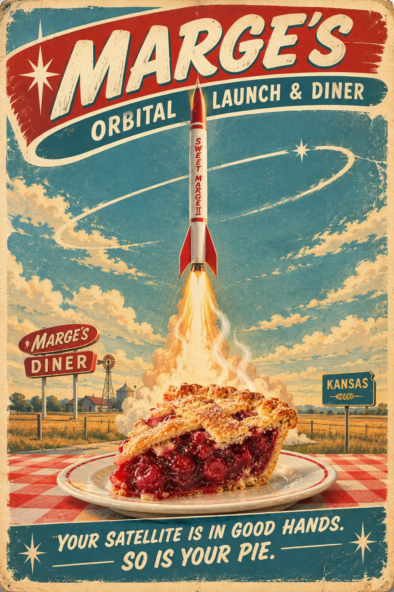
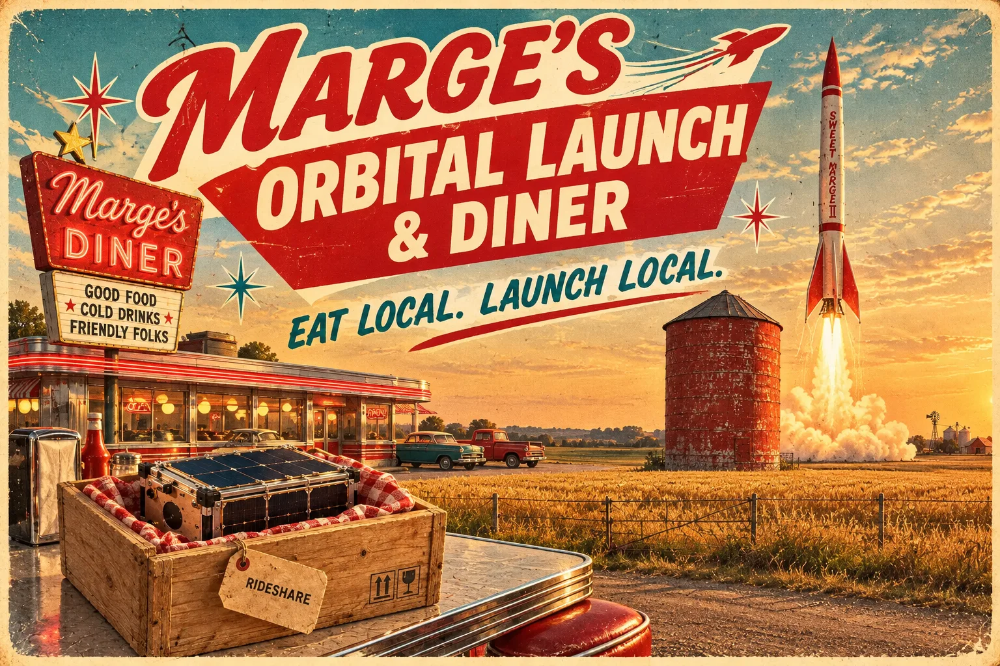
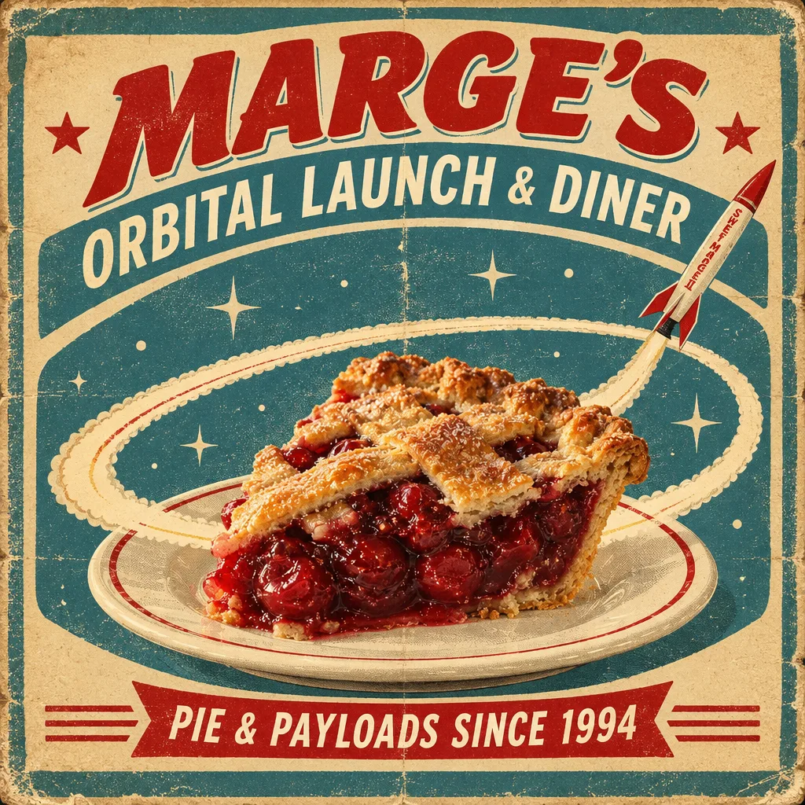

Marge's nephew studied design in Wichita and did these for pie. One hangs in the county extension office, one at the seed dealer, and one in Bill's barn where nobody will see it. Tap any poster to view it full size.


